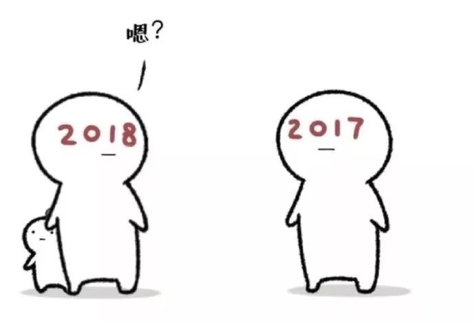

时间如白驹过隙，回想起过去的2017年仿佛就在昨天，元旦做了几天咸鱼，没有能够及时更新自己的年终总结，在此补上
回望2017
回望2017，在4月份我换了一份工作，之前的工作实在太闲了，我感觉这样不利于自己的进步，于是在3月份的时候正式提出离职，在4月份进入新公司。
工作感悟
新公司主要是做Web安全的，而我主要负责一款扫描器插件的开发于扫描器本身的维护工作。
这份工作经常给我带来惊喜，就比如说sql注入，正常人的思维是输入一个值，然后在数据库中查询，但是sql注入就不是，它会在输入的查询条件中带上sql语句，这与传统的方式不同，它给我一种耳目一新的感觉。我第一次学习到sql注入的原理时是那样的兴奋，感慨于它的不同寻常。同时也对安全从业者产生了一定的崇拜，他们一定是一些思维活跃的人，是一群打破常规的人，这些都是我决定从事安全行业，努力融入安全圈内。
这一年收获很多，在这一年中学习了一些常见漏洞的原理，攻击与防御的相关知识，通过阅读公司扫描器的源代码，学习了一些阅读源代码的方法，虽说还没有总结出一整套的方法论，但是也有一些思路。并根据这些方法我找到对应的代码并进行了一些修改。
另外，在这一年中学会了一些脚本语言，比如Python、JavaScript。我自己感觉虽然扫描器是使用VC++语言编写的，但是我在这一年中本身使用最多的反而是Python。在刚入职时使用Python开发了扫描器对于ajax部分的支持，使其能够正常爬取到使用JavaScript动态生成的脚本。后来又使用Python开发了大量的漏洞扫描插件。现在又在使用Python开发一款网站监控软件。可以说这一年如果不是自己一直在自学VC的内容，可能现在C的东西都忘干净了^_^
由于需要与Web程序打交道，所以一些理论方面的内容必定会涉及到，这一年主要详细了解了http协议，但是主要是在数据包层面上的，比如http的协议头、协议体等等，对于网络底层的东西仍然不是太明白，这也是目前的一个短板。后来为了方便，使用Python发送网络包的时候主要使用的requests库。知道了使用requests库定制协议头、判断响应包等等操作。但是反而对原生的urllib库不太了解。
总结这一年我感觉最有用处的项目就是当时我使用Python + webkit写的一个web2.0的爬虫以及现在的一个web监控系统。web监控目前没有完成，所以暂时不提它，这里主要说说web2.0爬虫
项目
web2.0爬虫参考书籍《白帽子将web扫描》一书，基本代码都是按照书中的思路来的。这个项目使我详细了解了http协议，正则表达式、xpath表达式等等。
为了使用webkit，项目主体是一个qt的任务调度部分负责调度由扫描器传过来的需要解析的url，每当有一个url过来的时候，都会触发一个自定义的事件，然后由qt调用对应的槽函数。
其实我原本打算使用Python的线程池，来进行调度，但是由于使用的是webkit的Python封装——ghost库，这个库有一个好处就是能够捕捉到所有的网络请求，这样我可以很方便的得到ajax异步加载时请求的URL，从而得到一些额外的url，当时ghost库使用的是全局的app类对象，qt又不允许跨线程访问对象，所以没办法取消了多线程。后来经过我的测试在性能上虽然有一些损失但是损失在能接受的范围内。
在解析url时候主要解析下面几种：
- 在一些常规标签中的url，对于这种采用的是常规的xpath表达式
- 出现在文本内容中的链接，或者JavaScript脚本中的链接，这种采用的是正则表达式
- 需要进行异步请求的链接，这种链接主要出现在一些JavaScript注册的事件中。这种链接主要使用ghost库，获取所有网络请求，然后解析其中的url
- 还有就是一些需要进行渲染之后才能出现的链接，对于这种链接，采用的是ghost库中的webkit进行渲染然后解析生成的HTML
其余事项
我在国庆期间去了一趟深圳，见了一下之前的大学同学，虽然很遗憾，不少人都回去了，但是我见到了当年的室友，以及领我上安全这条路的大牛同学。在于大牛同学的一些交谈中，我发现自己进步的没有想象中那么大，这些都激励着我继续努力不足
2017虽然有进步，但是也有许多的不足： - 生活过于懒散：最大的毛病在于生活过于懒散，没有规律。经常周五熬夜做自己感兴趣的事，一旦这件事做完了或者碰到瓶颈没法解决的时候，后面几天就成了一无是处的咸鱼。
- 手机占据了大量的业余时间，在这一年中，公司很多时候没有什么大事，加班比较少，我虽然回来的早，但是大量的时间用在玩手机上，根据我自己的观察，差不多从7点到8点半的时间很多时候都是在玩手机。而且有时候在学习的时候集中不了精力，时不时会看看手机，这样极大的影响了注意力。
- 缺少锻炼：要说这一年什么收获最大，那应该是我身上的30斤肥肉T_T，从年初的100多斤涨到现在快130斤，在加上自己经常久坐，导致现在有时候稍微活动一下就浑身不舒服，浑身酸痛。18年需要改变这一现状
- 读书太少：这一条与玩手机太多有很大的关系，长时间玩手机，使读书的时间压缩了，有时候200多页的书需要看个把月，总体算下来，今年一年加上在kindle上的书共有6本，明年可能要花更多时间在读书上
展望2018
生活习惯
针对上述出现的问题2018年决定做如下改变： - 多锻炼：目前计划在3月份房子到期找到新地方后就近找一个健身房办张卡，经常去锻炼身体，并且强迫自己每个星期必须出去走走
- 按时休息：每天按时休息不再分周末和平时，到点了放下手机或者手中的事睡觉，周末白天尽量在8点前起来，保证每天早上出去吃个早餐
- 尝试自己做饭，少点外卖
学习计划
- 详细学习网络原理
- 系统学习渗透测试，一些常见漏洞的攻击与防御
- 学习一些逆向的知识
- 学习一些Windows驱动编程的东西
- 看完之前的一套VC高级编程的视频，并针对每个知识点编写相应的代码
- 多写博客，做到每周一篇技术博客，尝试写一些读书笔记、鸡汤、项目总结类的文章
- 合理利用周末，周末做到每天玩手机时间不超过2小时，平时不超过半小时
2018书单
2018年计划读如下书目： - 《白帽子讲Web安全》
- 《TCP\IP协议》
- 《数学之美》
- 《人类简史》
- 《未来简史》
- 《腾讯传》
- 《古龙全集》（利用坐地铁的时间）
- 《球状闪电》
最后祝我与所有朋友2018越来越好